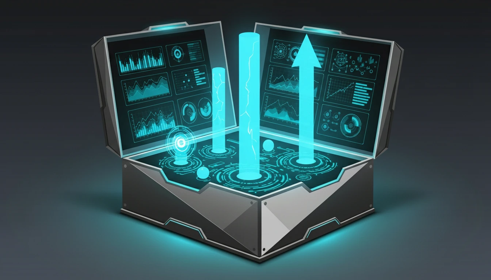

What is Sales Enablement? The Complete Guide to Empowering Sales Teams (2025)

You hire great salespeople. You have a great product. So why aren't you hitting your revenue targets? Often, the problem isn't the people or the product—it's the process. Your sales team is spending too much time searching for content, creating their own slides, or figuring out what to say.
This is where Sales Enablement comes in. It is the strategic process of equipping your sales team with the right content, tools, and training to sell more effectively.
Defining Sales Enablement
Sales enablement is the iterative process of providing your sales team with the resources they need to close more deals. These resources fall into three main buckets:
- Content: Case studies, whitepapers, email templates, and battle cards.
- Training: Onboarding, product training, and sales methodology coaching.
- Tools: CRM, sales engagement platforms, and content management systems.
Why is it Critical in 2025?
Buyers today are more informed than ever. By the time they talk to a salesperson, they have already done their research. They don't need a generic pitch; they need a consultant who can add value.
Sales enablement ensures that every rep, from the newest hire to the top performer, has the knowledge and assets to act as a trusted advisor. It bridges the gap between marketing (who creates the content) and sales (who uses it).
The 3 Pillars of a Successful Strategy
1. Content Management
Stop making your reps dig through Google Drive folders. A good enablement strategy organizes content by buyer persona and sales stage. If a rep is talking to a CTO in the consideration stage, they should instantly know which case study to send.
2. Sales Readiness (Training & Coaching)
Training isn't a one-time event during onboarding. It's continuous. "Readiness" means your reps are always prepared for the next call. This involves role-playing, call recording analysis, and regular feedback loops.
3. Technology & Automation
The right tech stack removes friction. It automates administrative tasks (like logging calls in the CRM) so reps can focus on selling. It also provides data on what's working—for example, which piece of content is actually driving conversions.
Measuring Success
How do you know if your enablement efforts are working? Track these metrics:
- Time to First Deal: How long does it take a new hire to close revenue?
- Quota Attainment: What percentage of your team is hitting their numbers?
- Content Usage: Which assets are being used, and which are gathering dust?
- Sales Cycle Length: Are you closing deals faster?
Conclusion
Sales enablement is not a "nice to have"?it's the engine of modern sales organizations. By aligning your people, processes, and technology, you empower your team to stop guessing and start closing.
Ready to build your sales stack? Check out our guide on choosing the right CRM.